Traffic Reports
When ClickHouse is enabled, a Reports page becomes available in the ntopng web GUI under the Dashboard > Reports menu.
This section describes how to use this functionality to build traffic reports on demand or automatically/periodically and get notified about their availability.
Note
Historical Flows Explorer and Reports are only available ntopng Enterprise M or above with ClickHouse enabled.
Reports contain charts of monitored interfaces overall traffic, local versus remote traffic, local networks traffic, as well as the traffic grouped by:
Application Protocols (e.g., HTTPS, Skype)
Countries
Local Hosts (hosts belonging to local networks) and Remote Hosts
Autonomous Systems
The picture below shows an example of report generate by ntopng:

Report Preview
ntopng implements a flexible dashboarding engine that allows you to define custom reports by means of graphical components and data sources. This means that multiple templates can be defined, according to the user requirements, to build reports with charts and data which is meaningful for the specific user, network and use case. A dropdown at the top of the Reports page lets you select the desired template to be used to build the report out of those available.

Report Templates
The report is build using traffic information in a selected time frame. It is possible to select an arbitrary time interval by using the dropdown and the range picker at the top of the Reports page. Fixed-width temporal intervals are also available (e.g. for the last one hour, day, weeek, etc.) producing a report that spans a time range that starts at the present and that goes backwards in time until the clicked interval is reached.

Report Time Interval
Save/Open Reports on ntopng
After selecting a report template and a time window, a report is generated and displayed. It is possible to save it by clicking on the Save button.
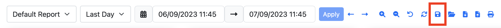
Report Save Button
A dialog will ask for a name for the report. By clicking Save, the report is stored on disk the same machine running ntopng as a JSON file containing all the information required to reload the same report in future for further analysis.

Report Save
In order to reload a previously-saved report, an Open button is available.

Report Open Button
A dialog will let you select the report, out of those previously saved in ntopng.
Note
In case of multiple users, reports generated by an administrator is visible by all administrators, instead reports generated by a non-privileged user is visible only to the same user (and traffic visibility restrictions will apply according to the configured user permissions), and the non-privileged user cannot see reports generated by administrators.
Through the same dialog it is also possible to delete a report (the selected one) or all reports.

Report Open and Delete
Warning
Reports are automatically deleted after some time according to the configured data retention. Please read the Data Retention section for further information.
Backup/Load Reports Locally
In addition to saving reports on the machine running ntopng, it is also possible to download a report locally to keep a backup or forward it to someone else. In order to dowload a report backup click on the Download button. This will download a JSON file containing all the information required to reload the report on the same or a different ntopng installation for visualization.

Report Download Button
In order to reload a report from a JSON file previously downloaded, click on the Upload button.
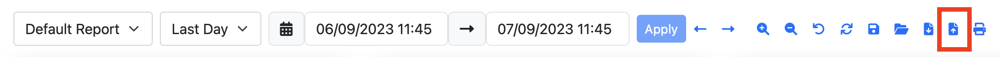
Report Upload Button
A dialog allows you to upload a report backup in JSON format and visualize it in ntopng. Please note this report is just visualized, no copy is stored on the machine running ntopng. However it is also possible to save it by clicking on the Save button as described in the previous section.
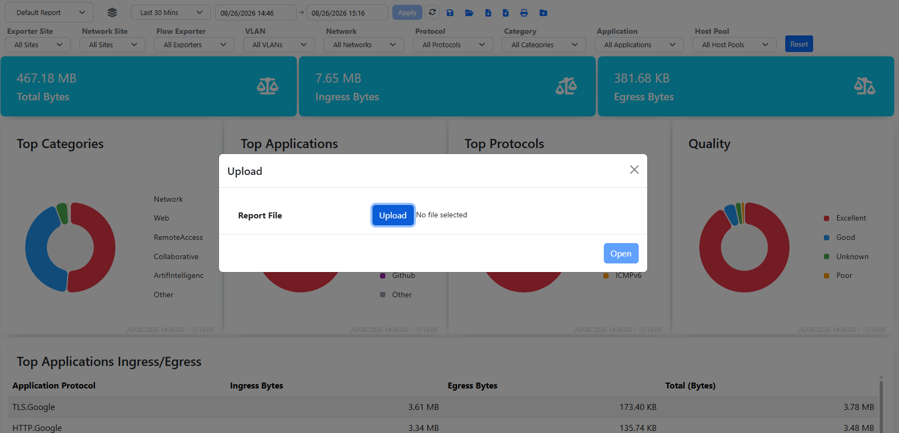
Report Upload
Print Report (PDF)
A print functionality is also available to actually print or generate a PDF from a reports, this is possible by clicking on the Print button.

Report Print Button
When printing a report the rendering engine does its best to fit all the graphical components in standard printing formats (e.g. A4).

Report Print
Automatic Reports and Notifications
In addition to the manual Report generation, automatic reports can also be enabled in ntopng. This means that ntopng can build for instance daily reports every night, with traffic information for the last 24h.
Note
Periodic Reports are only available in ntopng Enterprise L or above.
In order to enable this, a global setting is available under Settings -> Preferences -> Reports -> Daily Reports Generation.
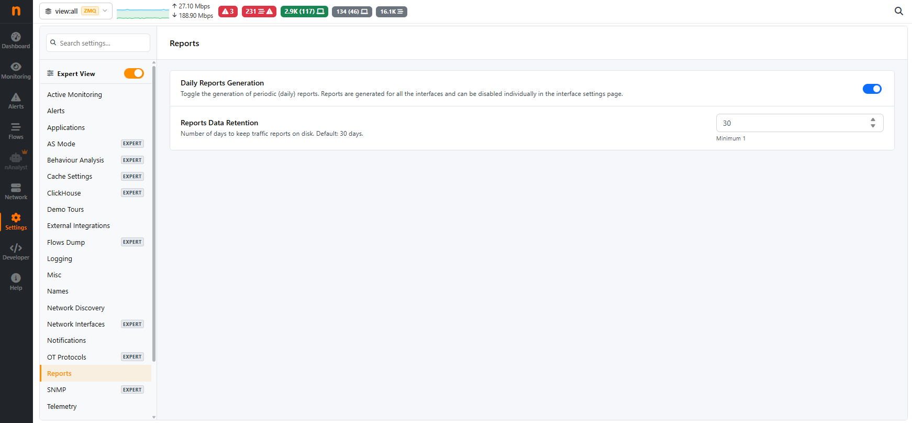
Automatic Report Preference
By enabling Daily Reports Generation, ntopng generates a report for every interface, every day. It is possible to disable automatic reports on selected interfaces through the Interface -> Details -> Settings -> Create Daily Reports setting, which is enabled by default after enabling the global setting.

Automatic Report Interface Preference
When a new report has been generated and it is available, ntopng can also send a notification to inform the user, e.g. by sending an email. In order to enable notifications, a Notification Endpoint and Recipient should be configured. In the Recipient configuration, Traffic Reports should be selected as Notification Type.
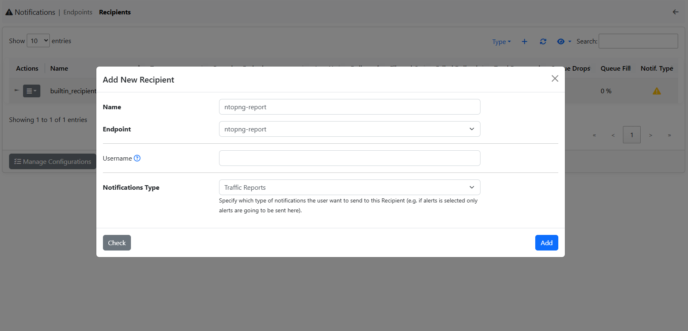
Report Notification Recipient
Below you can find an example of email notification sent by ntopng to notify the user about the availability of a new daily report, with a direct link to go to the actual report.

Report Email Notification Preview
Data Retention
All the reports stored on ntopng, both manually or automatically created, can be automatically deleted by ntopng after some time in order to implement a data retention policy and avoid filling the disk due to the number of reports growing undefinitely. There is a default data retention time configured in ntopng, this can be changed from the Settings -> Preferences -> Reports -> Reports Data Retention section.
Report Data Retention Preference
Reports Editor
The reports editor allows you to build custom reports by creating new templates. A collection of widgets is available, they can be combined to define a template.
Note
The Reports Editor is only available in ntopng Enterprise XL.
The Dashboard -> Traffic Report page includes a button in the toolbar to create a new template, as shown in the picture below.
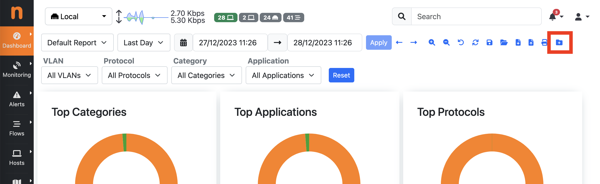
New Template Button
A dialog appears to configure the Template name.
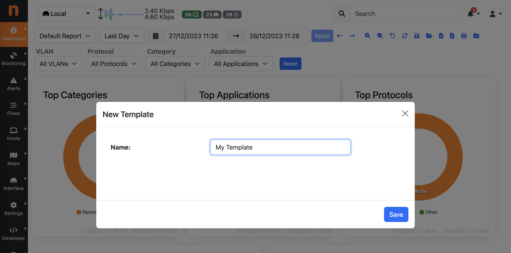
New Template Dialog
After creating the new template, it becomes available and can be selected from the reports selector dropdown.

Report Template Selector
By seleting a new template, an empty report is shown as the template is initially empty and need to be customized.
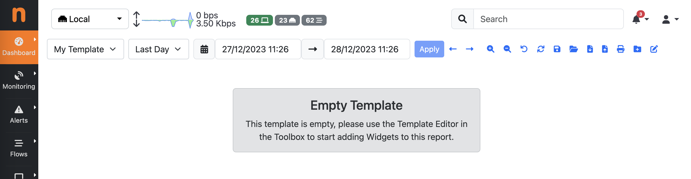
Empty Report Template
A Template Editor toggle is available in the toolbox when a custom template is selected. This allows you to enter the edit mode.
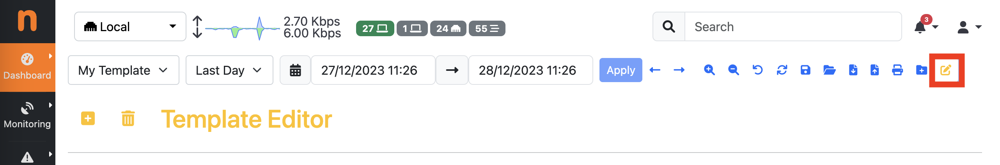
Report Editor Button
When entering the edit mode, a new toolbox for the Template Editor appears. The toolbox includes buttons for adding Widgets to the template, or deleting the template. By clicking on the Add Widget button, a dialog appears with a list of available Widgets that can be added to the template.

Report Widgets
When adding a Widget, this is appended to the template, with a default configuration.
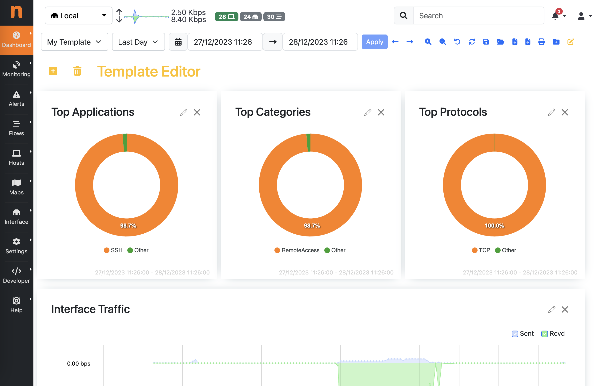
Report Template
Widget can be organized and sorted by dragging and dropping them around.

Widgets Drad and Drop
In edit mode, a few controls appear on the widgets themselves, including buttons for editing the widget configuration or removing them from the template.

Widget Actions in Edit Mode
By clicking on the edit button on a widget, it is possible to configure them, including changing:
displayed title
widget size (heigth and width)
time reference (the Time Offset is used to show traffic information with a time shift with respect to the time selected for the report, e.g. show traffic information 1 week ago, to compare it with the current traffic)
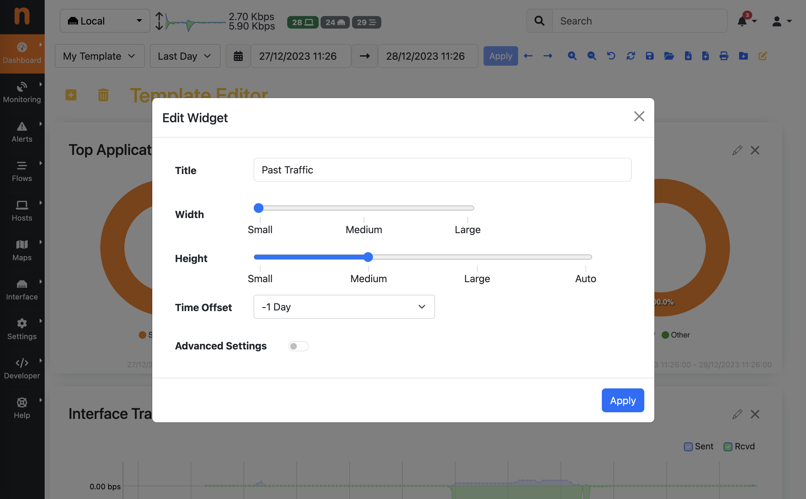
Widget Settings
An Advanced Settings toggle is also available. This allows to deeply customize the content of the Widget, by changing settings including the REST API URL and parameters, which are encoded in JSON format.
Special tokens are also supported in the JSON configuration to dynamically pass arguments to the widgets, e.g. $IFID$ is dynamically replaced with the current interface ID selected in ntopng while rendering the report.
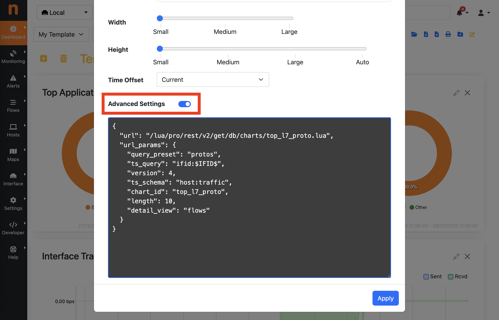
Widget Advanced Settings
Any change to the template is automatically saved (there is no Save button in the template editor).